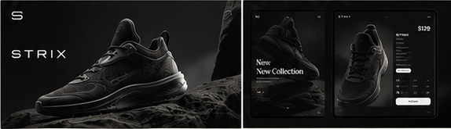

03 / E-commerce · UI/UX · Brand concept
STRIX
A modern e-commerce experience focused on clean design, smooth interaction and a strong monochrome identity built around performance footwear.

Product first.
Noise last.
The visual system makes the shoe the central object. Dark surfaces, compressed navigation and decisive typography create a technical, premium atmosphere across desktop and mobile.
Concept direction
The project explores art direction, responsive store layouts and product-detail interaction. It is presented as a concept, without implying launched commerce functionality or measured business results.